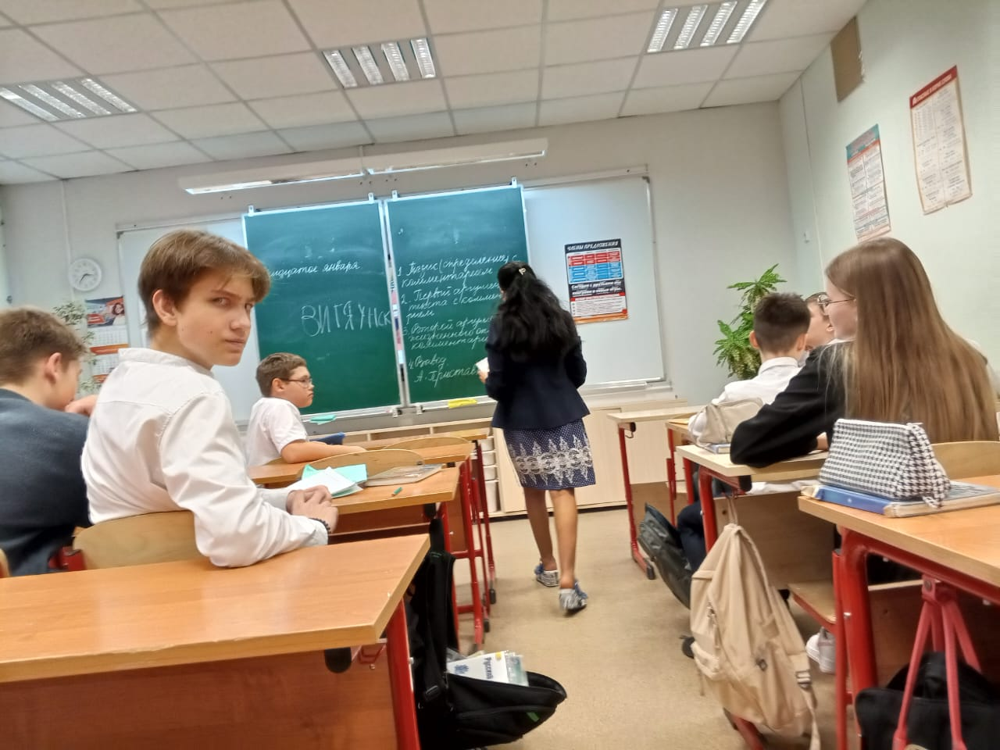

Секреты школы 60
сущности
аномальные предметы
домашняя страница
Сущность 11 Бабка Гренни
Тип: училка

Фото сделано: vega x3 graphics
Описание: Бабка, может заспавнится на 1-2 этаже только в шкила 60. При виде нее надо прятатся и сидеть молча.
Если заметила бежать, контрится чернышем. у нее есть бритва бритва Гренни.
может пердануть и все странники в районе 328,08 футах задохнутся.
Служит Ветятнску, кидает плотные.